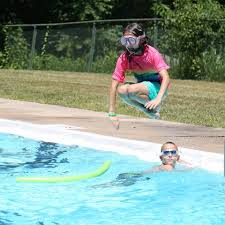

Currently i have had quite a few jobs starting with hershey park lifeguarding at both Hershey Park and Gretna Glen but since then I have expanded my work experience into elementary school teaching. Here I will share information about my work life.
This is where I currently work and I am enjoying it. My duties are verry similar to my duties of my other two teaching positions.
This is the first teaching position since comming back to Pennsylvania. Unfortunately I had to move on since I felt like I didnt belong there.
Duties:
I had moved to Florida in 2015 for a job opportunity at Reedy Creek. I worked there for four years until a job opportunity finally opened up back home in Pennsylvania. I was able to enjoy working here since my coworkers were nice and I could go to disney whenever I felt like it in fact most days i would go there to grade student assignments sicne I lived so close to it.
Duties:
I have worked at Gretna Glen as their Waterfront Coordinator as a summer job starting in 2011 and continuing to today. My duties there have been to set up lessons and activities for the campers as well as create an interactive orientation.
Asides doing WaterFront work I also serve as their Outdoor Education Facilitator. Here I would Plan and facilitate nature focused activities and lessons for school and community groups.